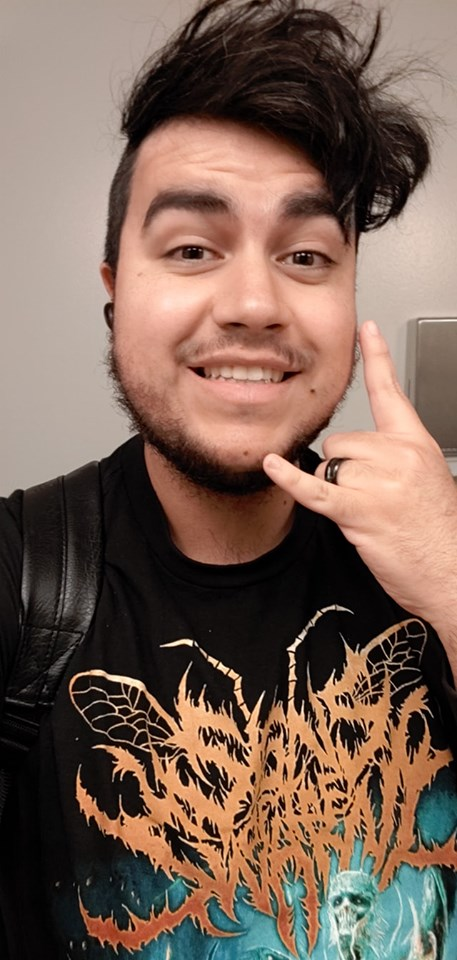

About Me
Hey there I am a student at Merrit College majoring in Computer Science. I work as a caregiver taking care of my 66 year old neighbor when im not at school. Once im done with this program and my merrit college studies I will be transfering to a 4 year to complete my bachelors and work in the tech industry.
I am a fast learner with a penchant for being more hands on and group project oriented as a result of my time at my high school envision academy. I already love computers and computer gaming that I enjoyed learning about the background processe that goes into creating programs and video games as well. I dont wanan be a video game programmer but learning coding lets me see with a new lens into what makes games tick. I will be one of the best and efficient programmers out there once I am done with my studies and the program at berkely.
During my free time I enjoy competing in competitive video games, make music, go out hiking, watching japanese cartoons, traveling, eating at Korean BBQ restaurants, eating ramen, eating exotic and different foods. I also drum!